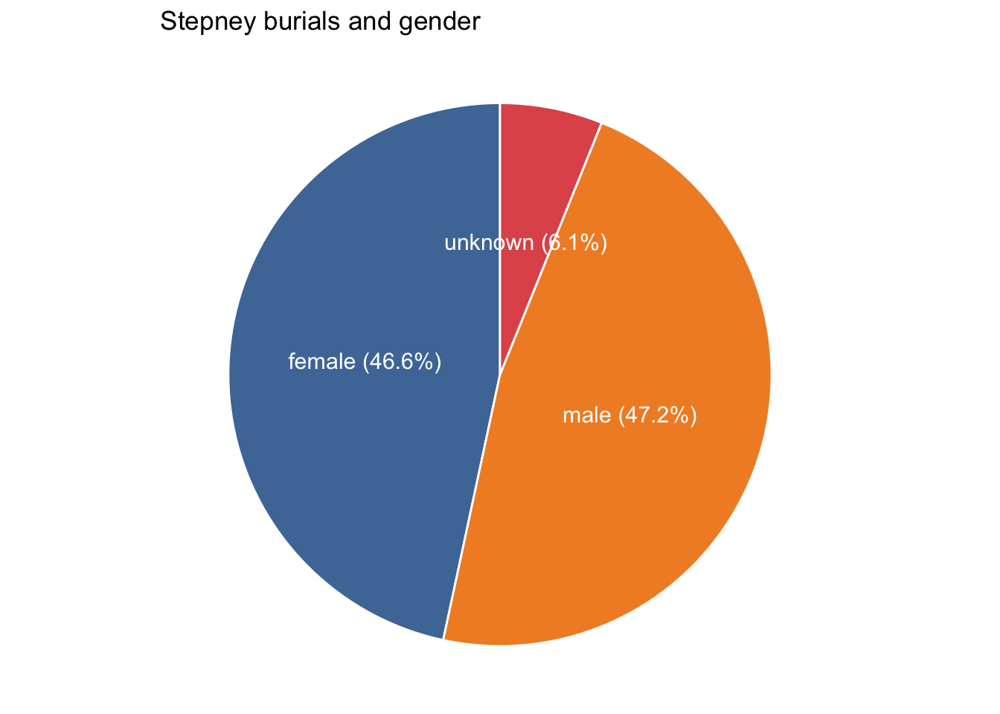
Death in 18th-century London
Demographic patterns and causes of death
death
Introduction
Content note: this post discusses infant and child mortality.
London (like most cities at the time) was an extraordinarily dangerous place to live in the 18th and 19th centuries, where life expectancy was lower than in rural populations. It was also a place that generated large amounts of information about deaths. In this post, I look at a dataset of burials created by The Cambridge Group for the History of Population and Social Structure (CAMPOP), and compare it with modern deaths data for England and Wales from the Office for National Statistics.
The data
- London Stepney Burials with Fees, 1733-1843 (CC-BY NC)
These individual level burials were collected to analyse variations and changes in mortality in London’s populous East End manufacturing district, in a very large parish where extant daybook accounts itemise burial costs, which varied according to services provided. These data consist of parish burial account book burials and parish register burials filling in gaps where there were no extant/accessible burial accounts books for St Dunstan Stepney, London between 1733 and 1843. This produces a continuous series of burials except for a gap beginning July 1808 and ending January 1812.
The dataset was created as part of a Migration, Mortality and Medicalisation project. I’m using a cleaned and deduplicated subset for 1775-1830 (full years only), containing 29,023 burials.
The series begins in 1963; I’ve pulled out five years (pre-Covid), 2011-15, containing 2,521,567 deaths.
Stepney notes
gender
Gender was added to the original Stepney dataset using first names, titles (Mr, Mrs, etc) or other information in the data (eg references to “daughter”); it hasn’t been carefully checked at this point and there may be errors.
About 6% of records didn’t contain enough information to assign gender. More than half of the unknowns are unnamed stillborn infants; I don’t know if it can be assumed that they’d be gender-balanced. Excluding unknowns, the female percentage is fractionally under 50%; in the modern data the female percentage is higher at 51.5%.
age
About 85% of the Stepney records have a usable age. However, inspection of ages indicates a substantial heaping problem among adults, ie that multiples of 10 are heavily overrepresented, perhaps increasingly so with age. (5s may also be slightly overrepresented, though nowhere near the same degree.) That does not happen in the ONS registrations data, though it can happen in modern datasets based on censuses or surveys.
In other words, many people’s exact ages were unknown (at least, to the people recording the burials) and the ages recorded were frequently estimates. In any case I’ve aggregated the data into ten-year age groups for analysis which makes this less of a problem, but I decided to make the groups centre on 10 (ie they go from 5-4 rather than 1-0 or 0-9) so the “heapiest” ages are in the middle.
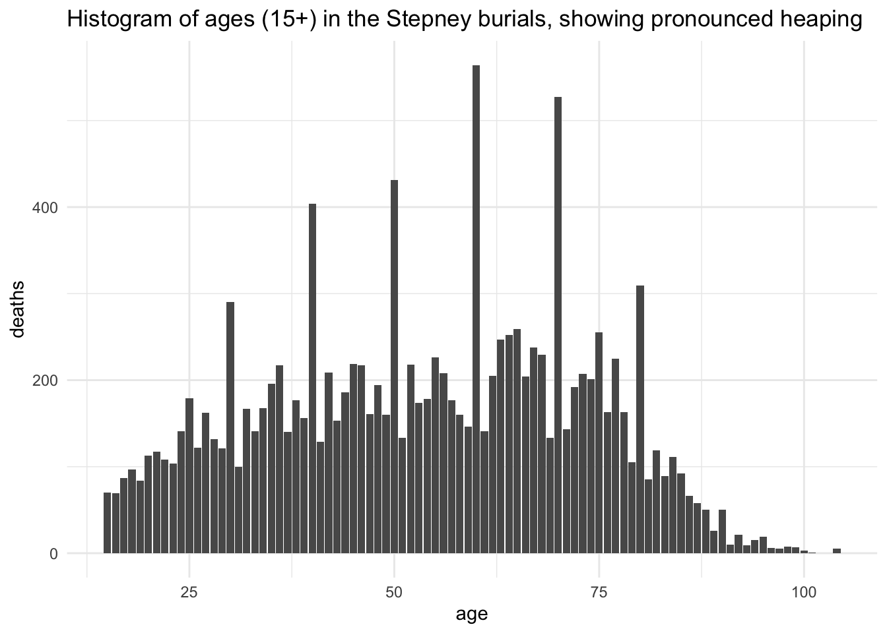
Stepney and ONS comparisons
The difference between the 21st-century and 1775-1830 data are profound.
To start with simple averages, the mean age of death in 2011-2015 was 77.6 and in Stepney 1775-1830 it was less than half that, at 29.8.
However, this kind of average can be misleading. As the histogram indicates, it doesn’t, for example, mean that there were few older people in late 18th-century London.
A cumulative density chart gives much more detail about the differences between the two datasets. It shows very clearly that the primary reason for the low Stepney average is shockingly high death rates among very young children: almost 40% of the people buried in Stepney died before their 6th birthday. In the modern population, the 40% mark is at about 78 years.
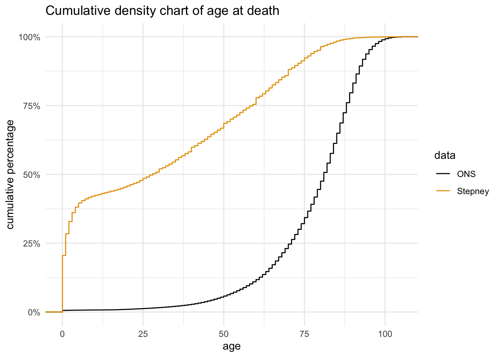
Population pyramid charts also help to highlight gender variations in the overall demographic patterns.
This would be a pretty typical profile for a wealthy modern country. It’s noticeable that the first year of life is still more dangerous than the rest of childhood, but there are very, very few child deaths, and numbers only really start to take off from the 40s. It also displays typical gender patterns, with women tending to live longer than men. There are a lot more women than men living beyond the age of 85.
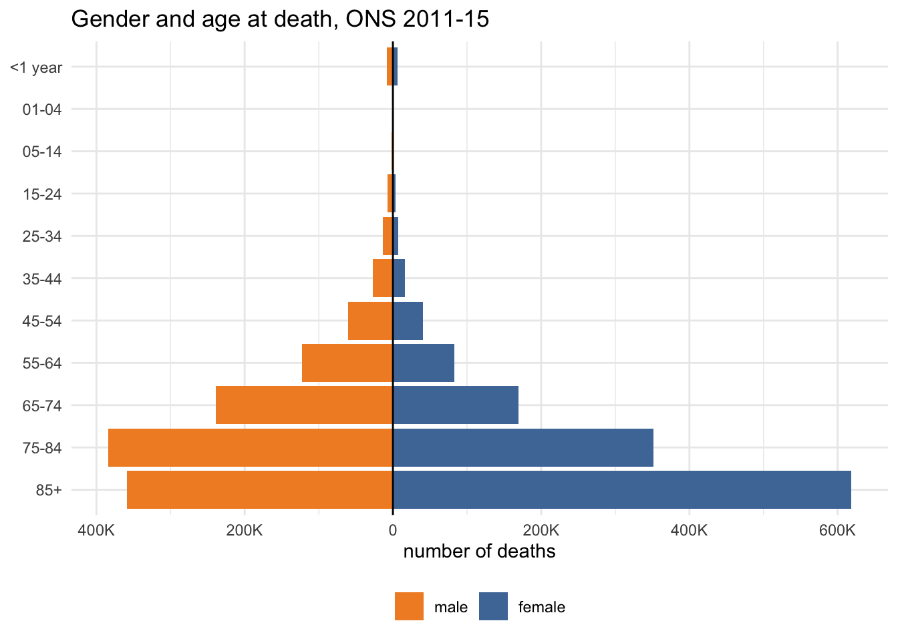
The most obvious contrast in the Stepney data is the death toll in the earliest years. But even after that, it’s clear that people were more likely to die relatively young compared to the modern population.
It’s striking that men died in very similar numbers in each group from their 40s their 60s, and something similar appears for women aged 35-54. In general, for adults, increases from one age group to the next look (proportionally) smaller than in the modern population.
Finally, although there are clearly plenty of over 60s, there are considerably fewer very old people (85+). The most notable similarity is the larger numbers of women in the oldest groups.
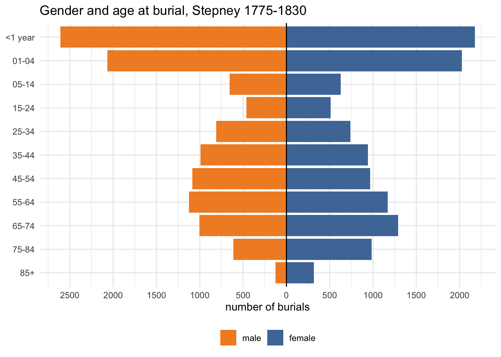
I was interested in comparing the gender ratios in each dataset across age groups. This plots the gap between male and female percentages and I’m not quite satisfied with it. But it does show that the gender ratios are more evenly balanced in most Stepney age groups (even allowing for the slightly higher overall female % in the modern dataset); the two oldest groups are the only exceptions.
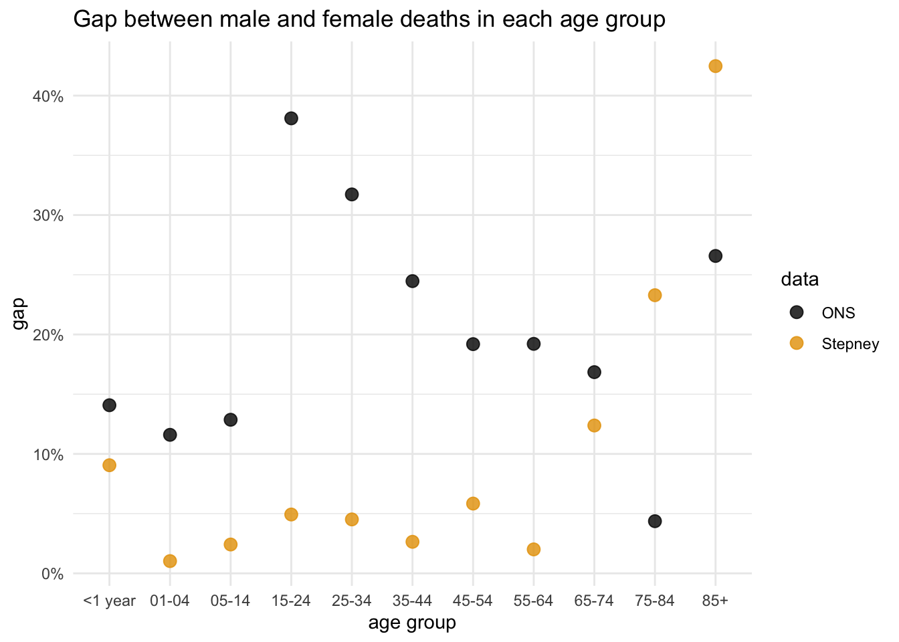
Stepney causes of death
24,301 burials (83.7%) have a recorded cause of death (22,357 (77%) have gender, age and cause).
Causes are quite varied and messy and for this post I’ve only done some quick preliminary cleaning and standardisation using OpenRefine (you can can see even in the top 15 I missed “cons’n” for “consumption”). Considerably more work would be needed for a serious piece of research, so this is just provisional exploration.
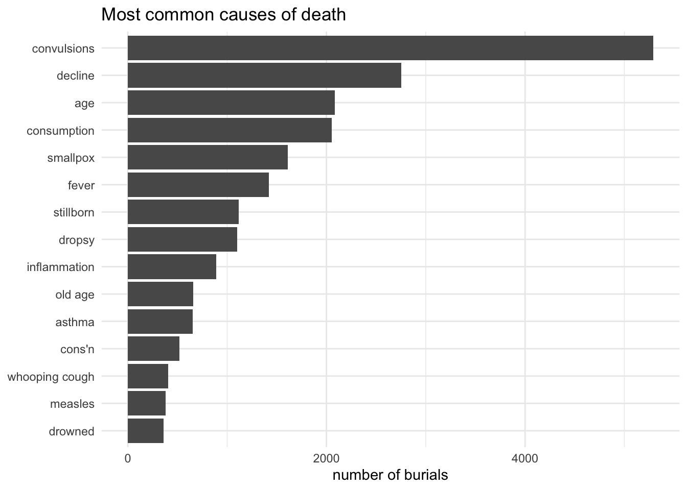
gender
The most frequent causes of death when broken down by gender are not very different from the overall chart. The only causes that don’t appear on both sides are childbirth and - rather less predictably, perhaps - drowned.
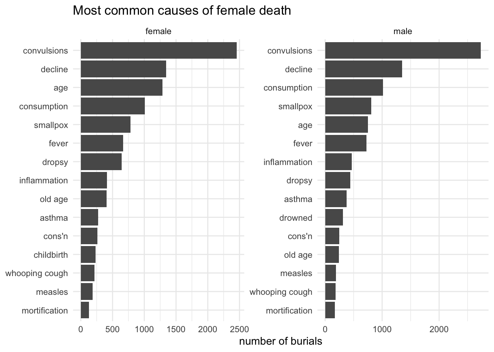
But what I’m really interested in is which causes were most distinctively female or male.
For women, childbirth is the leading cause, and really stands out as the most gendered cause. It’s ranked 12th among female deaths overall, accounting for 231 deaths, which is only about 2% of all female deaths. Among women of child-bearing age, however, childbirth represented a mugh bigger killer: 10% of women aged between 16 and 45, peaking at 13% in the 25-34 age group.
“Old age” is also strongly gendered female (which is consistent with women’s greater longevity); there’s more variation in old age deaths (old age/age/decay) and if they were properly standardised it could be closer to childbirth.
Meanwhile, the most male-gendered causes of death are more closely clustered (which suggests they may also be more varied, though that’s hard to judge without cleaner data).
The position of drowning as the most “male” cause of death most likely reflects the importance of maritime and river-related occupations in the city. Accidents also feature prominently (and “coroner” is more likely to be associated with accidental deaths than with violence). “Gravel” may refer to kidney stones or gallstones, along with “liver complaint” perhaps pointing to male tendencies to dietary excess.
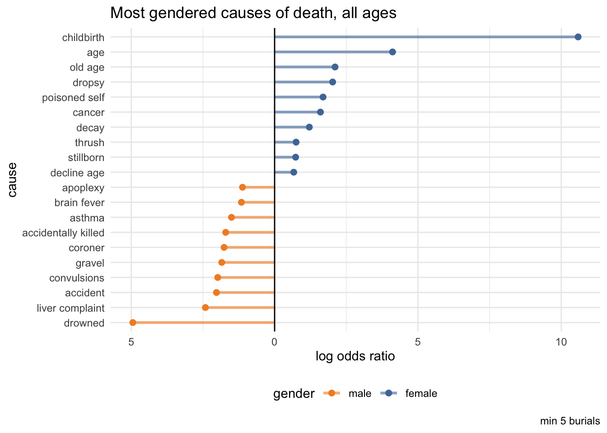
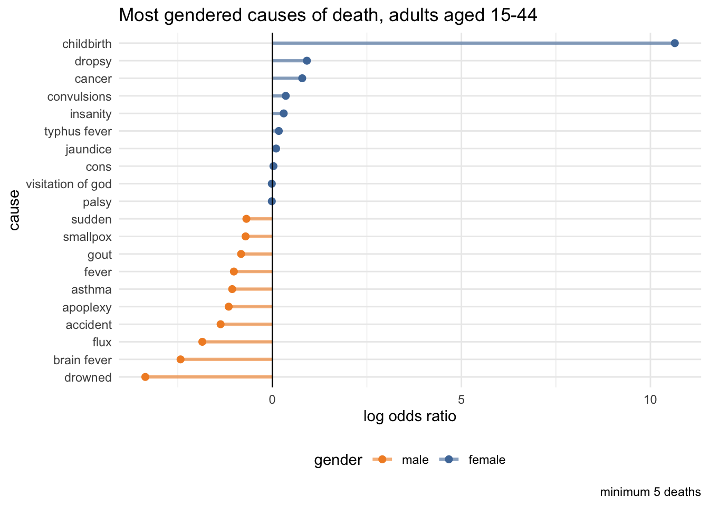
age
Meanwhile, what are the most strongly age-influenced causes of death? I’ve used a different set of age groups here, to separate out the very young and old. The death toll of infectious diseases among young children - whooping cough, measles, smallpox - makes for sobering reading at a historical moment when vaccine denialism is in the political ascent.
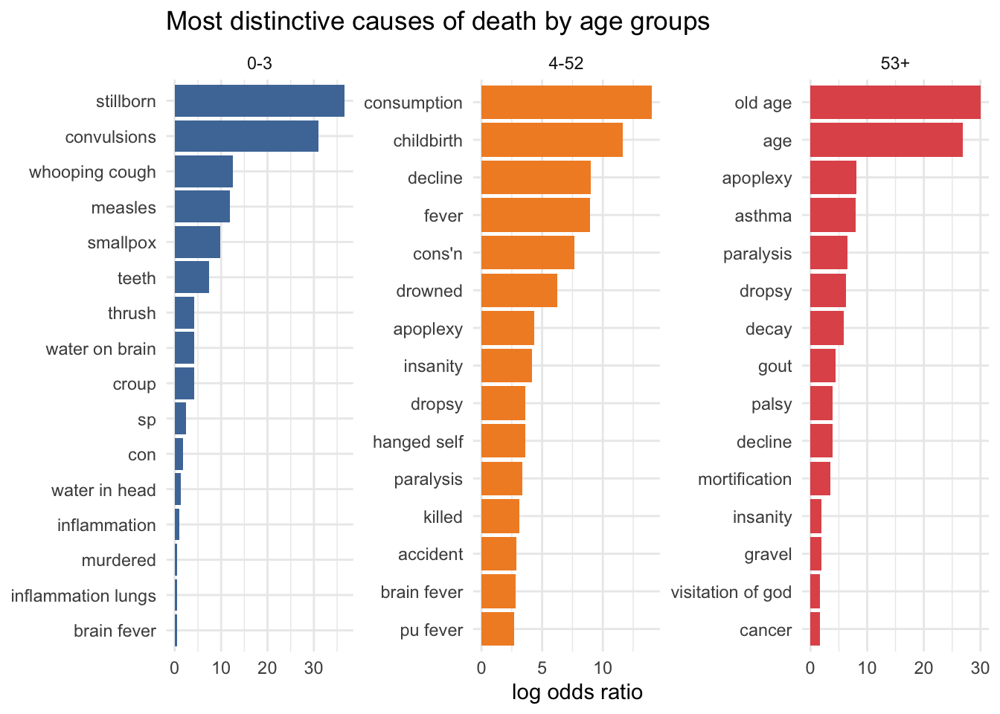